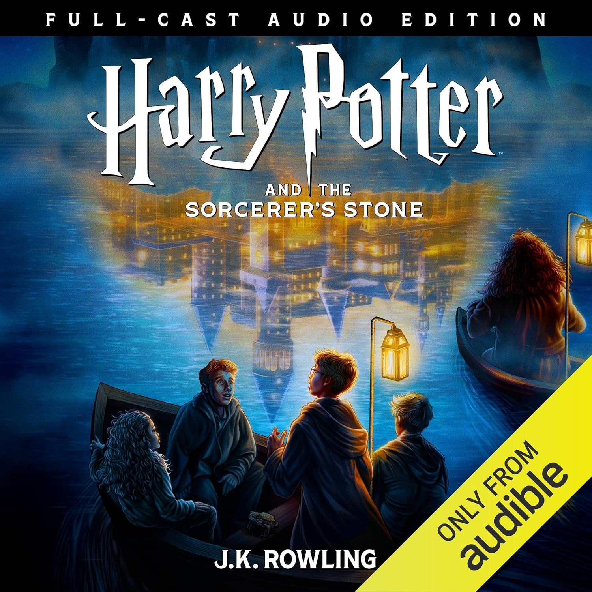

"Harry Potter and the Sorcerer's Stone (Full-Cast Edition)"
- Read on 2025-12-30
- Rating: ️️️️️
- Format: 🎧 (8 hours 41 minutes)
This time we listened to the full-cast audio edition from Audible. We really enjoyed it. The voice actors do a great job - the sound effects are fun. It's like an 8+ hour movie. We took our time listening to it, but it was easy to get back into it. My one complaint is that sometimes, those additional pieces overpower a character speaking in a quiet way (as the book has directed them to speak). Seems like something an audio engineer should have paid attention to. Maybe I wouldn’t notice it as much if I were listening on headphones as opposed to car speakers. All told, I still think this is significantly better than the default reader so many others love.
- Prior: The 1619 Project
- Next: The Fiery Trial